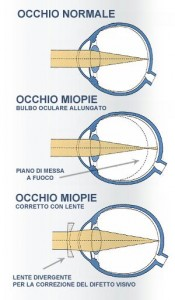
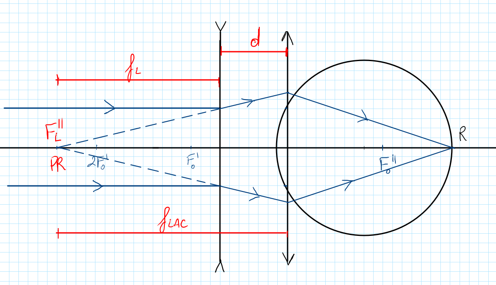

Obiettivi
- Collegare la correzione da lontano al punto remoto dell’occhio.
- Spiegare perché miopia e ipermetropia richiedono poteri di segno diverso.
- Distinguere potere della lente e vergenza al piano corneale.
- Calcolare una compensazione della distanza al vertice con segni espliciti.
- Riconoscere i limiti del modello rispetto a una prescrizione individuale.
Come aiutano gli occhiali a vedere nitido?
Livello intuitivo: Gli occhiali modificano il fascio prima che entri nell’occhio. La lente prepara i raggi in modo che il sistema oculare li concentri sulla retina.
Per essere maggiormente rigorosi: Per la visione da lontano con accomodazione rilassata, la lente deve fornire al piano di riferimento la vergenza associata al punto remoto. Nel miope fa apparire l’oggetto lontano come un oggetto virtuale posto nel punto remoto reale. Nell’ipermetrope fornisce invece un fascio convergente verso il punto remoto virtuale: l’occhio intercetta i raggi prima che raggiungano quel punto.
Il segno della lente
Correzione della miopia
Livello intuitivo: Una lente negativa rende divergenti i raggi che arrivano quasi paralleli. L’occhio miope può così focalizzarli più indietro, sulla retina.
Per essere maggiormente rigorosi: Nel modello sottile al piano di riferimento, un punto remoto a richiede una vergenza di . La correzione a un piano diverso deve tener conto della propagazione fra lente e occhio.
Correzione dell’ipermetropia
Livello intuitivo: Una lente positiva dà ai raggi una convergenza iniziale. L’occhio ha quindi meno lavoro da fare per portarli sulla retina.
Per essere maggiormente rigorosi: La correzione dipende anche dall’accomodazione e dallo scopo della compensazione. Un fascio convergente costituisce un oggetto virtuale per l’occhio. Non bisogna descrivere tutte le correzioni come immagini virtuali formate dalla lente: il caso ipermetropico richiede una distinzione geometrica.

Distanza al vertice: che cosa misuriamo?
Livello intuitivo: La lente dell’occhiale non tocca la cornea. Fra la sua faccia posteriore e l’occhio c’è uno spazio, spesso dell’ordine di alcuni millimetri. In quel tratto il fascio continua a convergere o divergere. Perciò lo stesso numero di diottrie, spostato in un altro piano, non dà esattamente lo stesso risultato.
Per essere maggiormente rigorosi: La distanza al vertice posteriore è la separazione assiale tra vertice posteriore della lente e vertice corneale. Nel modello di lente sottile la identifichiamo con la distanza fra i due piani di riferimento. Una lente a contatto si trova approssimativamente al piano corneale, ma il suo comportamento reale dipende anche da geometria e film lacrimale. La compensazione che segue è un’equivalenza parassiale in aria.

Dall’occhiale al piano corneale
Una lente sottile riceve da un oggetto all’infinito un fascio di vergenza nulla. Subito dopo la lente, la vergenza è uguale al suo potere. Dopo un tragitto positivo verso la cornea:
Cosa Vuol dire?
Livello intuitivo: Nel tragitto verso l’occhio la convergenza di un fascio positivo aumenta. Un fascio negativo continua a divergere, ma la sua vergenza diventa meno negativa. Per ottenere lo stesso effetto al piano corneale dobbiamo tener conto di questo tragitto.
Per essere maggiormente rigorosi: è positivo per il tragitto dalla lente alla cornea e deve essere in metri; i poteri sono in diottrie. Il prodotto è adimensionale. Stiamo confrontando due lenti equivalenti in piani diversi, non affermando che il potere fisico della lente cambi mentre la luce viaggia.
Esempio positivo, passaggio per passaggio
Dati: lente da occhiale , distanza al vertice .
Livello intuitivo: Una lente ideale più vicina all’occhio deve avere un potere più positivo per mantenere l’effetto della precedente lente da occhiale.
Esempio negativo, passaggio per passaggio
Dati: lente da occhiale , stessa distanza.
Livello intuitivo: Al piano corneale basta un valore meno negativo per conservare lo stesso effetto ottico del modello.
Dal piano corneale all’occhiale
Isolando il potere dell’occhiale dalla stessa equazione:
Livello intuitivo: Ora spostiamo il riferimento nella direzione opposta. Il segno nel denominatore cambia perché risolviamo il problema inverso. continua a indicare la separazione positiva fra occhiale e cornea.
Esempio: un potere al piano corneale di , da riportare a davanti alla cornea.
Verifica del percorso di ritorno, prima di arrotondare:
Per essere maggiormente rigorosi: Le cifre servono a verificare l’equivalenza matematica. La prescrizione e l’eventuale passaggio a lenti a contatto richiedono valutazione professionale e non coincidono automaticamente con questi risultati ideali.